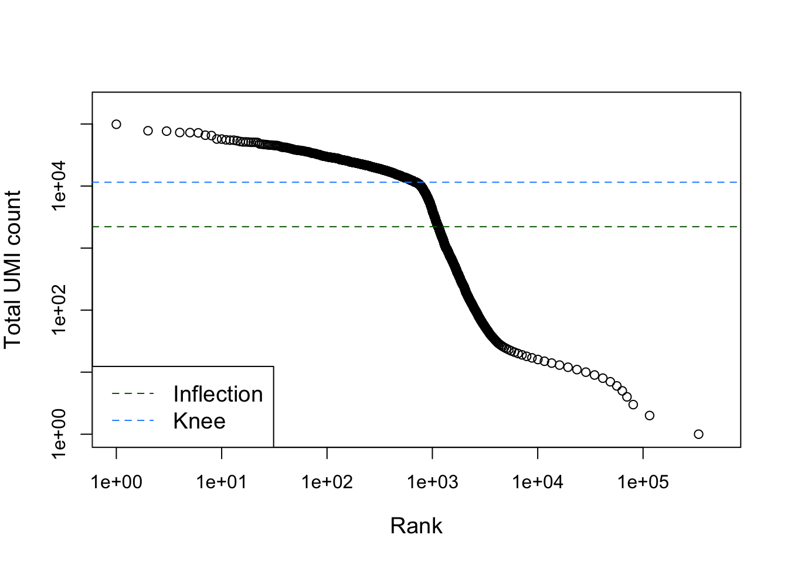
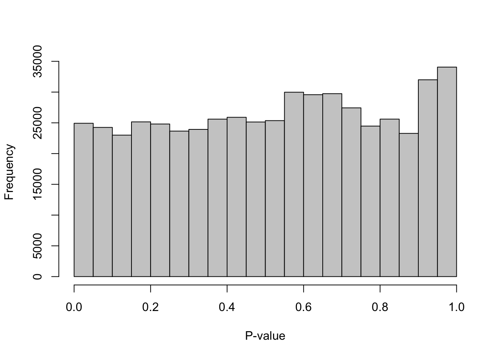
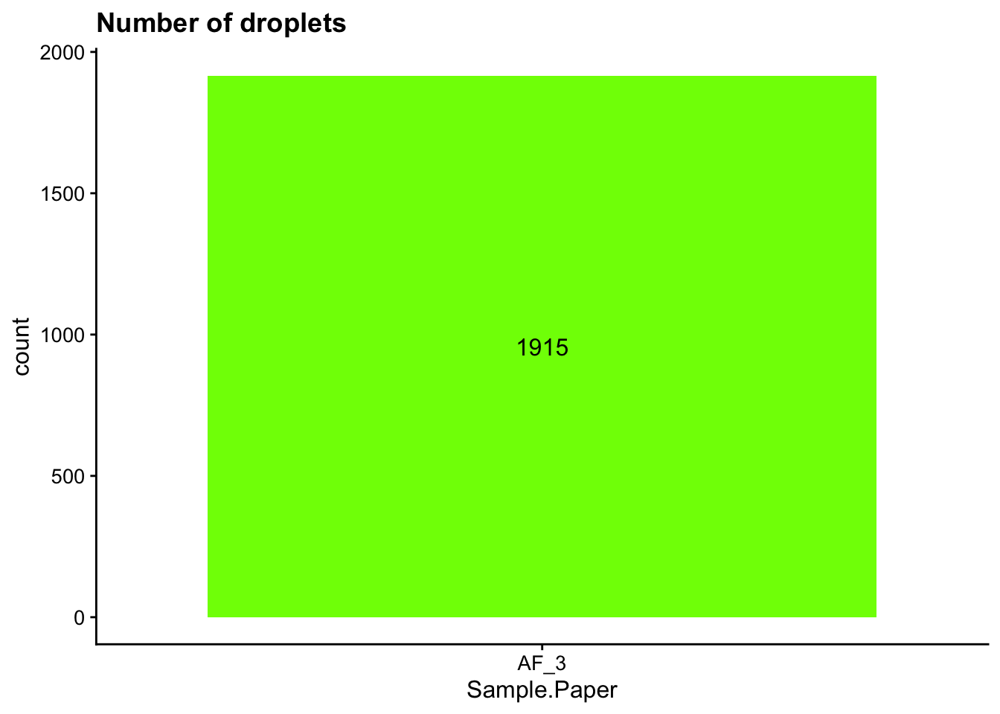
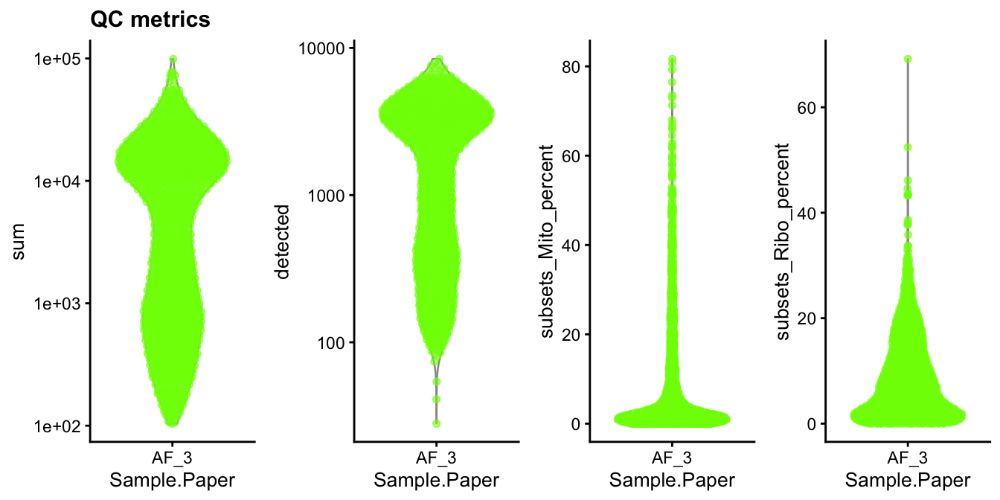
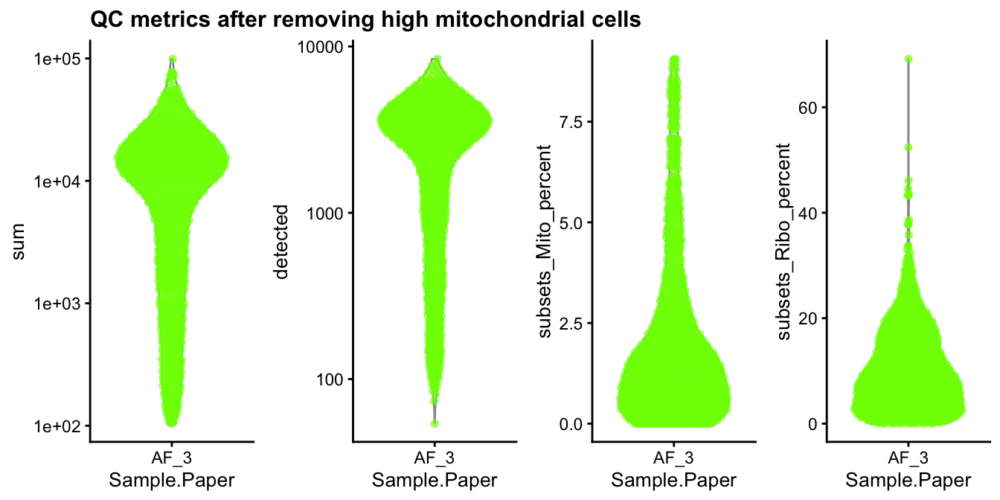
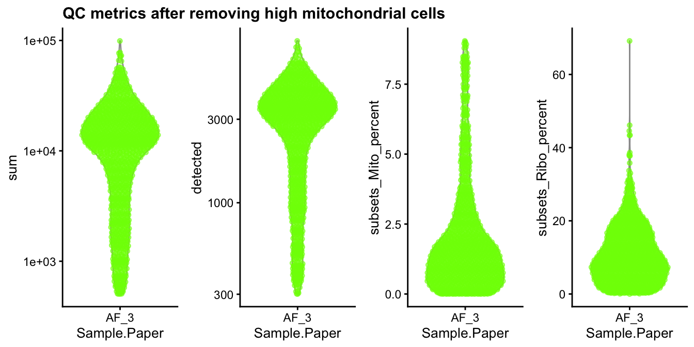

Last updated: 2026-10-13
Checks: 7 0
Knit directory: amniosinglecell/
This reproducible R Markdown analysis was created with workflowr (version 1.7.2). The Checks tab describes the reproducibility checks that were applied when the results were created. The Past versions tab lists the development history.
Great! Since the R Markdown file has been committed to the Git repository, you know the exact version of the code that produced these results.
Great job! The global environment was empty. Objects defined in the global environment can affect the analysis in your R Markdown file in unknown ways. For reproduciblity it’s best to always run the code in an empty environment.
The command set.seed(20220125) was run prior to running
the code in the R Markdown file. Setting a seed ensures that any results
that rely on randomness, e.g. subsampling or permutations, are
reproducible.
Great job! Recording the operating system, R version, and package versions is critical for reproducibility.
Nice! There were no cached chunks for this analysis, so you can be confident that you successfully produced the results during this run.
Great job! Using relative paths to the files within your workflowr project makes it easier to run your code on other machines.
Great! You are using Git for version control. Tracking code development and connecting the code version to the results is critical for reproducibility.
The results in this page were generated with repository version b6ee7cb. See the Past versions tab to see a history of the changes made to the R Markdown and HTML files.
Note that you need to be careful to ensure that all relevant files for
the analysis have been committed to Git prior to generating the results
(you can use wflow_publish or
wflow_git_commit). workflowr only checks the R Markdown
file, but you know if there are other scripts or data files that it
depends on. Below is the status of the Git repository when the results
were generated:
Ignored files:
Ignored: .DS_Store
Ignored: .Rhistory
Ignored: .Rproj.user/
Ignored: analysis/generate_site.R
Ignored: analysis/knit_docs.R
Ignored: analysis/run_as_job.R
Ignored: analysis/sccomp_draws_files/
Ignored: celltypist/output_Gerli_et_al_2024_fetal_organ/
Ignored: celltypist/output_Gerli_et_al_2024_pan_fetal/
Ignored: data/
Ignored: excluded_analysis/
Ignored: output/
Ignored: renv/.DS_Store
Ignored: renv/library/
Ignored: renv/staging/
Ignored: sccomp_draws_files/
Untracked files:
Untracked: AmnioSC_Manuscript_Claude/
Untracked: claude_log/
Unstaged changes:
Modified: analysis/AmnioSC_workflow_optref_preprocess_dataset01.Rmd
Modified: analysis/AmnioSC_workflow_optref_preprocess_dataset03.Rmd
Modified: analysis/AmnioSC_workflow_optref_preprocess_dataset04.Rmd
Modified: analysis/AmnioSC_workflow_optref_preprocess_dataset05.Rmd
Modified: analysis/AmnioSC_workflow_preprocess_dataset04.Rmd
Note that any generated files, e.g. HTML, png, CSS, etc., are not included in this status report because it is ok for generated content to have uncommitted changes.
These are the previous versions of the repository in which changes were
made to the R Markdown
(analysis/AmnioSC_workflow_preprocess_dataset03.Rmd) and
HTML (docs/AmnioSC_workflow_preprocess_dataset03.html)
files. If you’ve configured a remote Git repository (see
?wflow_git_remote), click on the hyperlinks in the table
below to view the files as they were in that past version.
| File | Version | Author | Date | Message |
|---|---|---|---|---|
| Rmd | b6ee7cb | Calandra Grima | 2026-10-13 | wflow_publish(here("analysis", "AmnioSC_workflow_preprocess_dataset03.Rmd")) |
| html | 994ca08 | Calandra Grima | 2026-08-04 | Build site. |
| html | e038ec4 | calandra.grima | 2026-02-06 | Build site. |
| Rmd | 4b6a6d1 | calandra.grima | 2026-02-06 | wflow_publish(here("analysis", "AmnioSC_workflow_preprocess_dataset03.Rmd")) |
| html | 1337c1e | Calandra Grima | 2025-04-14 | Build site. |
| Rmd | 36bec9c | Calandra Grima | 2025-04-14 | wflow_publish(here("analysis", "AmnioSC_workflow_preprocess_dataset03.Rmd")) |
| html | 4af2ea9 | Calandra Grima | 2023-11-22 | Build site. |
| Rmd | 3c4c056 | Calandra Grima | 2023-11-22 | wflow_publish(here("analysis", "AmnioSC_workflow_preprocess_dataset03.Rmd")) |
| html | 2d4d43f | Calandra Grima | 2023-09-11 | Build site. |
| Rmd | 7e89d32 | Calandra Grima | 2023-09-11 | Swap mentions of Azimuth to Celltypist |
| html | c0daccb | Calandra Grima | 2023-01-13 | Build site. |
| Rmd | 2f115a9 | Calandra Grima | 2023-01-13 | wflow_publish(here("analysis", "AmnioSC_workflow_preprocess_dataset03.Rmd")) |
| html | e75026a | Calandra Grima | 2022-12-06 | Build site. |
| Rmd | a86ed3d | Calandra Grima | 2022-12-06 | wflow_publish(here("analysis", "AmnioSC_workflow_preprocess_dataset03.Rmd")) |
| html | be07086 | Calandra Grima | 2022-10-11 | Build site. |
| Rmd | 44a312d | Calandra Grima | 2022-10-11 | wflow_publish(here("analysis", "AmnioSC_workflow_preprocess_dataset03.Rmd")) |
| html | b5d5edf | Calandra Grima | 2022-10-11 | Build site. |
| Rmd | fd87e32 | Calandra Grima | 2022-10-11 | wflow_publish(here("analysis", "AmnioSC_workflow_preprocess_dataset03.Rmd")) |
| html | f28c81c | Calandra Grima | 2022-09-13 | Build site. |
| Rmd | 7a65b48 | Calandra Grima | 2022-09-13 | wflow_publish(here("analysis", "AmnioSC_workflow_preprocess_dataset03.Rmd")) |
| html | 5e3ff66 | Calandra Grima | 2022-09-13 | Build site. |
| Rmd | 3181c80 | Calandra Grima | 2022-09-13 | wflow_publish(here("analysis", "AmnioSC_workflow_preprocess_dataset03.Rmd")) |
| html | 6c0a6cd | Calandra Grima | 2022-09-13 | Build site. |
| Rmd | c3bca9c | Calandra Grima | 2022-09-13 | wflow_publish(here("analysis", "AmnioSC_workflow_preprocess_dataset03.Rmd")) |
| Rmd | 348e11f | Calandra Grima | 2022-09-08 | Making some extra plots |
| html | 0ed5624 | Calandra Grima | 2022-09-06 | Build site. |
| html | 4fb709f | Calandra Grima | 2022-09-06 | Build site. |
| Rmd | bb7b25a | Calandra Grima | 2022-09-06 | wflow_publish(here("analysis", "AmnioSC_workflow_preprocess_dataset03.Rmd")) |
library(DropletUtils)
library(SingleCellExperiment)
library(Seurat)
library(SeuratObject)
library(scater)
library(scuttle)
library(ggplot2)
library(cowplot)
library(patchwork)
library(egg)
library(rmarkdown)
library(workflowr)
library(here)
library(tidyr)
library(sessioninfo)
source(here("code", "helper_functions.R"))
source(here("code", "load_colour_schemes.R"))
RERUN_ALL <- FALSEThe count data was processed using CellRanger.
object <- here("data", "workflow", "AmnioSC_03.CellRanger.SCE.rds")
if(!file.exists(object) | RERUN_ALL){
# this holds the paths to the raw data
# replace this with your own paths
source(here("code", "load_paths.R"))
capture_path <- paste0(AF_3_PATH, "/outs/raw_feature_bc_matrix")
# Construct SingleCellExperiment object
sce <- read10xCounts(samples = c(capture_path), col.names = TRUE)
stopifnot(!anyDuplicated(colnames(sce)))
sce$Sample <- "4AF"
saveRDS(sce, file = object)
} else {
sce <- readRDS(object)
}
sce$Sample.Paper <- SAMPLE.PAPER[sce$Sample]
sce$Sample.Paper <- factor(sce$Sample.Paper)
sceclass: SingleCellExperiment
dim: 33538 732123
metadata(1): Samples
assays(1): counts
rownames(33538): ENSG00000243485 ENSG00000237613 ... ENSG00000277475
ENSG00000268674
rowData names(3): ID Symbol Type
colnames(732123): AAACCCAAGAAAGTCT-1 AAACCCAAGAACCGCA-1 ...
TTTGTTGTCTTTGCTG-1 TTTGTTGTCTTTGGAG-1
colData names(3): Sample Barcode Sample.Paper
reducedDimNames(0):
mainExpName: NULL
altExpNames(0):Sample AF_3 (4AF):
To preprocess this dataset, the following steps will be performed:
emptyDrops()Droplet-based single-cell datasets contain numerous droplets that lack cells (known as empty droplets). These are distinguished from droplets containing cells and removed from the dataset based on their expression profile. This is done separately for each 10x run (although Dataset #3 only contains a single run).
This process is complicated as empty droplets contain ambient (extracellular) RNA that is captured and sequenced, so therefore the distribution of total UMI counts vs. barcode rank is examined. A sharp transition between barcodes of large total counts to barcodes of small total counts is indicative of a transition from droplets containing cells to empty droplets.
bcrank <- barcodeRanks(counts(sce))
# Only showing unique points for plotting speed.
uniq <- !duplicated(bcrank$rank)
plot(
x = bcrank$rank[uniq],
y = bcrank$total[uniq],
log = "xy",
xlab = "Rank",
ylab = "Total UMI count",
cex.lab = 1.2,
xlim = c(1, 500000),
ylim = c(1, 200000))
abline(h = metadata(bcrank)$inflection, col = "darkgreen", lty = 2)
abline(h = metadata(bcrank)$knee, col = "dodgerblue", lty = 2)
legend("bottomleft", legend=c("Inflection", "Knee"),
col=c("darkgreen", "dodgerblue"), lty=2, cex=1.2)
set.seed(100)
limit <- 100 # lower bound on the total UMI count (anything below = empty); 100 = default value
all.out <- emptyDrops(counts(sce), lower=limit, test.ambient=TRUE)hist(all.out$PValue[all.out$Total <= limit & all.out$Total > 0],
xlab="P-value", main="", col="grey80")
This histogram shows the p-value distribution for
emptyDrops(). Peaks near zero suggest that
lower should be decreased as cells with library sizes below
this value are being flagged as empty droplets.
Cells are called at a false discovery rate of 0.1%, meaning that no more than 0.1% of the called barcodes should be empty droplets on average.
# exclude mitochondrial and ribosomal genes
keep <- !(grepl("^MT-", rowData(sce)$Symbol) | grepl("^RP[SL]", rowData(sce)$Symbol))
set.seed(100)
e.out <- emptyDrops(counts(sce)[keep,],
BPPARAM = BiocParallel::MulticoreParam(workers = BiocParallel::multicoreWorkers() - 1))
summary(e.out$FDR <= 0.001) Mode FALSE TRUE NA's
logical 197 1915 730011 # There are no barcodes where the computed p-value is bounded by the number of iterations
# http://bioconductor.org/books/3.15/OSCA.advanced/droplet-processing.html#qc-droplets
table(Sig=e.out$FDR <= 0.001, Limited=e.out$Limited) Limited
Sig FALSE TRUE
FALSE 197 0
TRUE 52 1863# filter out the empty droplets
sce <- sce[, which(e.out$FDR <= 0.001)]
saveRDS(sce, here("data", "workflow", "AmnioSC_03.emptyDrops.SCE.rds"))Now that empty droplets have been removed from the dataset by
emptyDrops(), we can perform quality control to remove poor
quality cells from the dataset.
There are initially 1915 cells present in the dataset.
ggcells(sce, aes(x=Sample.Paper, fill = Sample.Paper)) +
geom_bar() +
geom_text(stat="count", aes(label = ..count..), position = position_stack(vjust = 0.5)) +
theme_cowplot(12) +
no_legend +
scale_fill_manual(values = ALL_SAMPLES_COLOURS.PAPER) +
ggtitle("Number of droplets")
Before progressing further, we will convert from Ensembl to symbol gene names for convenience and identify the mitochondrial and ribosomal genes. We will also add some QC statistics into the SingleCellExperiment object.
# converting from Ensembl to Symbol gene names
rownames(sce) <- uniquifyFeatureNames(
rowData(sce)$ID, rowData(sce)$Symbol)
# finding all the mitochondrial and ribosomal genes
is.mito <- grep(pattern = "^MT-", x = rownames(sce), value = TRUE)
is.ribo <- grep(pattern = "^RP(S|L)", x = rownames(sce), value = TRUE)
sce <- addPerCellQC(sce, subsets=list(Mito=is.mito, Ribo=is.ribo))The below plots display the library size (sum), number
of expressed genes (detected), mitochondrial proportion
(subsets_Mito_percent) and ribosomal proportion
(subsets_Ribo_percent) for each cell in the dataset.
ggarrange(
plotColData(sce, x = "Sample.Paper", y="sum", colour_by = "Sample.Paper") +
no_legend + scale_y_log10() +
scale_colour_manual(values = ALL_SAMPLES_COLOURS.PAPER) + ggtitle("QC metrics"),
plotColData(sce, x = "Sample.Paper", y="detected", colour_by = "Sample.Paper") +
no_legend + scale_y_log10() +
scale_colour_manual(values = ALL_SAMPLES_COLOURS.PAPER),
plotColData(sce, x = "Sample.Paper", y="subsets_Mito_percent",
colour_by = "Sample.Paper") + no_legend +
scale_colour_manual(values = ALL_SAMPLES_COLOURS.PAPER),
plotColData(sce, x = "Sample.Paper", y="subsets_Ribo_percent",
colour_by = "Sample.Paper") + no_legend +
scale_colour_manual(values = ALL_SAMPLES_COLOURS.PAPER),
ncol=4
)
summary(sce$subsets_Mito_percent) Min. 1st Qu. Median Mean 3rd Qu. Max.
0.0000 0.8243 1.9524 7.8350 8.0719 81.6446 # using adaptive thresholds to flag the cells with high mitochondrial proportion
high.mito <- isOutlier(sce$subsets_Mito_percent, type="higher")
table(high.mito)high.mito
FALSE TRUE
1471 444 attr(high.mito, "thresholds") lower higher
-Inf 9.082675 sce <- sce[, which(!high.mito)]
summary(sce$subsets_Mito_percent) Min. 1st Qu. Median Mean 3rd Qu. Max.
0.0000 0.5873 1.3801 2.0374 2.6650 9.0571 There are 1471 cells remaining after removing high mitochondrial cells.
ggarrange(
plotColData(sce, x = "Sample.Paper", y="sum", colour_by = "Sample.Paper") +
no_legend + scale_y_log10() +
scale_colour_manual(values = ALL_SAMPLES_COLOURS.PAPER) +
ggtitle("QC metrics after removing high mitochondrial cells"),
plotColData(sce, x = "Sample.Paper", y="detected", colour_by = "Sample.Paper") +
no_legend + scale_y_log10() +
scale_colour_manual(values = ALL_SAMPLES_COLOURS.PAPER),
plotColData(sce, x = "Sample.Paper", y="subsets_Mito_percent",
colour_by = "Sample.Paper") + no_legend +
scale_colour_manual(values = ALL_SAMPLES_COLOURS.PAPER),
plotColData(sce, x = "Sample.Paper", y="subsets_Ribo_percent",
colour_by = "Sample.Paper") + no_legend +
scale_colour_manual(values = ALL_SAMPLES_COLOURS.PAPER),
ncol=4
)
Adaptive thresholds do not work well with this dataset for library size and detected genes, therefore manual thresholds will be used for these QC metrics
qc.stats <- data.frame(
low_lib_size = sce$sum < 500,
low_n_features = sce$detected < 300,
row.names = colnames(sce)
)
colSums(as.matrix(qc.stats)) low_lib_size low_n_features
161 157 sce <- sce[, which(!qc.stats$low_lib_size & !qc.stats$low_n_features)]There are 1298 cells remaining after removing cells with low library size and/or few detected genes.
ggarrange(
plotColData(sce, x = "Sample.Paper", y="sum", colour_by = "Sample.Paper") +
no_legend + scale_y_log10() +
scale_colour_manual(values = ALL_SAMPLES_COLOURS.PAPER) +
ggtitle("QC metrics after removing high mitochondrial cells"),
plotColData(sce, x = "Sample.Paper", y="detected", colour_by = "Sample.Paper") +
no_legend + scale_y_log10() +
scale_colour_manual(values = ALL_SAMPLES_COLOURS.PAPER),
plotColData(sce, x = "Sample.Paper", y="subsets_Mito_percent",
colour_by = "Sample.Paper") + no_legend +
scale_colour_manual(values = ALL_SAMPLES_COLOURS.PAPER),
plotColData(sce, x = "Sample.Paper", y="subsets_Ribo_percent",
colour_by = "Sample.Paper") + no_legend +
scale_colour_manual(values = ALL_SAMPLES_COLOURS.PAPER),
ncol=4
)
The goal of this section is to flag genes that are uninformative prior to clustering, such as mitochondrial and ribosomal genes.
keep.genes <- setdiff(rownames(sce), c(is.mito, is.ribo))
# remove unwanted genes
sce <- sce[keep.genes, ]saveRDS(sce, here("data", "workflow", "AmnioSC_03.Preprocess.SCE.rds"))sessioninfo::session_info()─ Session info ───────────────────────────────────────────────────────────────
setting value
version R version 4.5.0 (2025-04-11)
os macOS 26.7.1
system aarch64, darwin20
ui X11
language (EN)
collate en_US.UTF-8
ctype en_US.UTF-8
tz Australia/Melbourne
date 2026-10-13
pandoc 3.10 @ /Applications/RStudio.app/Contents/Resources/app/quarto/bin/tools/aarch64/ (via rmarkdown)
quarto 1.10.18 @ /Applications/RStudio.app/Contents/Resources/app/quarto/bin/quarto
─ Packages ───────────────────────────────────────────────────────────────────
! package * version date (UTC) lib source
P abind 1.4-8 2024-09-12 [?] RSPM
P beachmat 2.26.0 2025-10-29 [?] Bioconduc~
P beeswarm 0.4.0 2021-06-01 [?] RSPM
P Biobase * 2.70.0 2025-10-29 [?] Bioconduc~
P BiocGenerics * 0.56.0 2025-10-29 [?] Bioconduc~
P BiocManager 1.30.27 2025-11-14 [?] RSPM
P BiocNeighbors 2.4.0 2025-10-29 [?] Bioconduc~
P BiocParallel 1.44.0 2025-10-29 [?] Bioconduc~
P BiocSingular 1.26.1 2025-11-17 [?] Bioconduc~
P bluster 1.20.0 2025-10-29 [?] Bioconduc~
P bslib 0.10.0 2026-01-26 [?] RSPM
P cachem 1.1.0 2024-05-16 [?] RSPM
P callr 3.7.6 2024-03-25 [?] CRAN (R 4.5.0)
P cli 3.6.6 2026-04-09 [?] RSPM
P cluster 2.1.8.1 2025-03-12 [?] CRAN (R 4.5.0)
P codetools 0.2-20 2024-03-31 [?] CRAN (R 4.5.0)
colorspace 2.1-2 2025-09-22 [1] RSPM (R 4.5.0)
P cowplot * 1.2.0 2025-07-07 [?] RSPM
P data.table 1.18.2.1 2026-01-27 [?] RSPM
DelayedArray 0.36.1 2026-03-31 [1] https://bioc-release.r-universe.dev (R 4.5.3)
P DelayedMatrixStats 1.32.0 2025-10-29 [?] Bioconduc~
P deldir 2.0-4 2024-02-28 [?] RSPM
P digest 0.6.39 2025-11-19 [?] RSPM
dplyr 1.2.0 2026-02-03 [1] RSPM (R 4.5.0)
P dqrng 0.4.1 2024-05-28 [?] CRAN (R 4.5.0)
P DropletUtils * 1.30.0 2025-10-29 [?] Bioconduc~
P edgeR 4.8.2 2025-12-23 [?] https://bioc-release.r-universe.dev (R 4.5.2)
P egg * 0.4.5 2019-07-13 [?] RSPM
P evaluate 1.0.5 2025-08-27 [?] RSPM
P farver 2.1.2 2024-05-13 [?] RSPM
P fastmap 1.2.0 2024-05-15 [?] RSPM
P fitdistrplus 1.2-6 2026-01-24 [?] RSPM
P fs 2.1.0 2026-04-18 [?] RSPM
P future 1.69.0 2026-01-16 [?] RSPM
P future.apply 1.20.1 2025-12-09 [?] RSPM
P generics * 0.1.4 2025-05-09 [?] CRAN (R 4.5.0)
P GenomicRanges * 1.62.1 2025-12-08 [?] Bioconduc~
P getPass 0.2-4 2023-12-10 [?] CRAN (R 4.5.0)
P ggalluvial * 0.12.5 2023-02-22 [?] RSPM
P ggbeeswarm * 0.7.3 2025-11-29 [?] RSPM
P ggplot2 * 4.0.2 2026-02-03 [?] RSPM
P ggrepel 0.9.6 2024-09-07 [?] CRAN (R 4.5.0)
P ggridges 0.5.7 2025-08-27 [?] RSPM
P git2r 0.36.2 2025-03-29 [?] CRAN (R 4.5.0)
P globals 0.19.0 2026-02-02 [?] RSPM
P glue 1.8.0 2024-09-30 [?] RSPM
P goftest 1.2-3 2021-10-07 [?] CRAN (R 4.5.0)
P gridExtra * 2.3 2017-09-09 [?] RSPM
P gtable 0.3.6 2024-10-25 [?] RSPM
P h5mread 1.2.1 2025-12-08 [?] Bioconduc~
P HDF5Array 1.38.0 2025-12-08 [?] Bioconduc~
P here * 1.0.2 2025-09-15 [?] RSPM
P htmltools 0.5.9 2025-12-04 [?] RSPM
P htmlwidgets 1.6.4 2023-12-06 [?] RSPM
P httpuv 1.6.16 2025-04-16 [?] CRAN (R 4.5.0)
P httr 1.4.7 2023-08-15 [?] RSPM
P ica 1.0-3 2022-07-08 [?] CRAN (R 4.5.0)
P igraph 2.2.1 2025-10-27 [?] RSPM
P IRanges * 2.44.0 2025-10-29 [?] Bioconduc~
P irlba 2.3.7 2026-01-30 [?] RSPM
P jquerylib 0.1.4 2021-04-26 [?] RSPM
P jsonlite 2.0.0 2025-03-27 [?] RSPM
P KernSmooth 2.23-26 2025-01-01 [?] CRAN (R 4.5.0)
P knitr 1.51 2025-12-20 [?] RSPM
P labeling 0.4.3 2023-08-29 [?] RSPM
P later 1.4.5 2026-01-08 [?] RSPM
P lattice 0.22-7 2025-04-02 [?] RSPM
P lazyeval 0.2.2 2019-03-15 [?] RSPM
leiden 0.4.3.1 2023-11-17 [1] RSPM (R 4.5.0)
P lifecycle 1.0.5 2026-01-08 [?] RSPM
P limma 3.66.0 2025-10-29 [?] Bioconduc~
P listenv 0.10.0 2025-11-02 [?] RSPM
P lmtest 0.9-40 2022-03-21 [?] CRAN (R 4.5.0)
P locfit 1.5-9.12 2025-03-05 [?] RSPM
P magrittr 2.0.4 2025-09-12 [?] RSPM
P MASS 7.3-65 2025-02-28 [?] CRAN (R 4.5.0)
P Matrix 1.7-4 2025-08-28 [?] RSPM
P MatrixGenerics * 1.22.0 2025-10-29 [?] Bioconduc~
P matrixStats * 1.5.0 2025-01-07 [?] RSPM
P metapod 1.18.0 2025-10-29 [?] Bioconduc~
P mime 0.13 2025-03-17 [?] RSPM
P miniUI 0.1.2 2025-04-17 [?] CRAN (R 4.5.0)
P nlme 3.1-168 2025-03-31 [?] CRAN (R 4.5.0)
P otel 0.2.0 2025-08-29 [?] RSPM
P parallelly 1.46.1 2026-01-08 [?] RSPM
P patchwork * 1.3.2 2025-08-25 [?] RSPM
P pbapply 1.7-4 2025-07-20 [?] RSPM
P pillar 1.11.1 2025-09-17 [?] RSPM
P pkgconfig 2.0.3 2019-09-22 [?] RSPM
P plotly 4.12.0 2026-01-24 [?] RSPM
P plyr 1.8.9 2023-10-02 [?] RSPM
P png 0.1-8 2022-11-29 [?] RSPM
P Polychrome * 1.5.4 2025-04-06 [?] RSPM
P polyclip 1.10-7 2024-07-23 [?] CRAN (R 4.5.0)
P processx 3.8.6 2025-02-21 [?] CRAN (R 4.5.0)
P progressr 0.18.0 2025-11-06 [?] RSPM
P promises 1.5.0 2025-11-01 [?] RSPM
P ps 1.9.1 2025-04-12 [?] CRAN (R 4.5.0)
P purrr 1.2.1 2026-01-09 [?] RSPM
P R.methodsS3 1.8.2 2022-06-13 [?] RSPM
P R.oo 1.27.1 2025-05-02 [?] RSPM
P R.utils 2.13.0 2025-02-24 [?] RSPM
P R6 2.6.1 2025-02-15 [?] RSPM
P RANN 2.6.2 2024-08-25 [?] CRAN (R 4.5.0)
P RColorBrewer 1.1-3 2022-04-03 [?] RSPM
P Rcpp 1.1.1 2026-01-10 [?] RSPM
P RcppAnnoy 0.0.23 2026-01-12 [?] RSPM
P renv 1.1.7 2026-01-27 [?] RSPM
P reshape2 * 1.4.5 2025-11-12 [?] RSPM
P reticulate 1.44.1 2025-11-14 [?] RSPM
P rhdf5 2.54.1 2025-12-08 [?] Bioconduc~
P rhdf5filters 1.22.0 2025-10-29 [?] Bioconduc~
P Rhdf5lib 1.32.0 2025-10-29 [?] Bioconduc~
P rlang 1.2.0 2026-04-06 [?] RSPM
P rmarkdown * 2.30 2025-09-28 [?] RSPM
P ROCR 1.0-12 2026-01-23 [?] RSPM
P rprojroot 2.1.1 2025-08-26 [?] RSPM
P rstudioapi 0.18.0 2026-01-16 [?] RSPM
P rsvd 1.0.5 2021-04-16 [?] RSPM
P Rtsne 0.17 2023-12-07 [?] CRAN (R 4.5.0)
P S4Arrays 1.10.1 2025-12-08 [?] Bioconduc~
S4Vectors * 0.48.1 2026-04-04 [1] https://bioc-release.r-universe.dev (R 4.5.3)
P S7 0.2.1 2025-11-14 [?] RSPM
P sass 0.4.10 2025-04-11 [?] RSPM
P ScaledMatrix 1.18.0 2025-10-29 [?] Bioconduc~
P scales 1.4.0 2025-04-24 [?] RSPM
P scater * 1.38.0 2025-10-29 [?] Bioconduc~
P scattermore 1.2 2023-06-12 [?] CRAN (R 4.5.0)
P scatterplot3d 0.3-44 2023-05-05 [?] RSPM
P scran * 1.38.0 2025-10-29 [?] Bioconduc~
P sctransform 0.4.3 2026-01-10 [?] RSPM
P scuttle * 1.20.0 2025-10-29 [?] Bioconduc~
P Seqinfo * 1.0.0 2025-10-29 [?] Bioconduc~
P sessioninfo * 1.2.3 2025-02-05 [?] RSPM
Seurat * 4.4.0 2024-01-10 [1] https://satijalab.r-universe.dev (R 4.5.0)
SeuratObject * 4.1.4 2023-09-27 [1] https://satijalab.r-universe.dev (R 4.5.0)
P shiny 1.12.1 2025-12-09 [?] RSPM
P SingleCellExperiment * 1.32.0 2025-10-29 [?] Bioconduc~
P sp 2.2-0 2025-02-01 [?] CRAN (R 4.5.0)
P SparseArray 1.10.8 2025-12-18 [?] Bioconduc~
P sparseMatrixStats 1.22.0 2025-10-29 [?] Bioconduc~
P spatstat.data 3.1-9 2025-10-18 [?] RSPM
P spatstat.explore 3.7-0 2026-01-22 [?] RSPM
P spatstat.geom 3.7-0 2026-01-20 [?] RSPM
P spatstat.random 3.4-4 2026-01-21 [?] RSPM
P spatstat.sparse 3.1-0 2024-06-21 [?] CRAN (R 4.5.0)
P spatstat.univar 3.1-6 2026-01-17 [?] RSPM
P spatstat.utils 3.2-1 2026-01-10 [?] RSPM
P statmod 1.5.1 2025-10-09 [?] RSPM
P stringi 1.8.7 2025-03-27 [?] RSPM
P stringr 1.6.0 2025-11-04 [?] RSPM
P SummarizedExperiment * 1.40.0 2025-10-29 [?] Bioconduc~
P survival 3.8-6 2026-01-16 [?] RSPM
P tensor 1.5.1 2025-06-17 [?] RSPM
P tibble 3.3.1 2026-01-11 [?] RSPM
P tidyr * 1.3.2 2025-12-19 [?] RSPM
P tidyselect 1.2.1 2024-03-11 [?] RSPM
P uwot 0.2.4 2025-11-10 [?] RSPM
P vctrs 0.7.1 2026-01-23 [?] RSPM
P vipor 0.4.7 2023-12-18 [?] RSPM
P viridis * 0.6.5 2024-01-29 [?] RSPM
P viridisLite * 0.4.2 2023-05-02 [?] RSPM
P whisker 0.4.1 2022-12-05 [?] CRAN (R 4.5.0)
P withr 3.0.2 2024-10-28 [?] RSPM
P workflowr * 1.7.2 2025-08-18 [?] RSPM
P xfun 0.56 2026-01-18 [?] RSPM
P xtable 1.8-4 2019-04-21 [?] RSPM
P XVector 0.50.0 2025-10-29 [?] Bioconduc~
P yaml 2.3.12 2025-12-10 [?] RSPM
P zoo 1.8-15 2025-12-15 [?] RSPM
[1] <project>/renv/library/macos/R-4.5/aarch64-apple-darwin20
[2] <renv-cache>/sandbox/macos/R-4.5/aarch64-apple-darwin20/4cd76b74
* ── Packages attached to the search path.
P ── Loaded and on-disk path mismatch.
──────────────────────────────────────────────────────────────────────────────
sessionInfo()R version 4.5.0 (2025-04-11)
Platform: aarch64-apple-darwin20
Running under: macOS 26.7.1
Matrix products: default
BLAS: /Library/Frameworks/R.framework/Versions/4.5-arm64/Resources/lib/libRblas.0.dylib
LAPACK: /Library/Frameworks/R.framework/Versions/4.5-arm64/Resources/lib/libRlapack.dylib; LAPACK version 3.12.1
locale:
[1] en_US.UTF-8/en_US.UTF-8/en_US.UTF-8/C/en_US.UTF-8/en_US.UTF-8
time zone: Australia/Melbourne
tzcode source: internal
attached base packages:
[1] stats4 stats graphics grDevices datasets utils methods
[8] base
other attached packages:
[1] scran_1.38.0 Polychrome_1.5.4
[3] viridis_0.6.5 viridisLite_0.4.2
[5] ggbeeswarm_0.7.3 reshape2_1.4.5
[7] ggalluvial_0.12.5 sessioninfo_1.2.3
[9] tidyr_1.3.2 here_1.0.2
[11] rmarkdown_2.30 egg_0.4.5
[13] gridExtra_2.3 patchwork_1.3.2
[15] cowplot_1.2.0 scater_1.38.0
[17] ggplot2_4.0.2 scuttle_1.20.0
[19] SeuratObject_4.1.4 Seurat_4.4.0
[21] DropletUtils_1.30.0 SingleCellExperiment_1.32.0
[23] SummarizedExperiment_1.40.0 Biobase_2.70.0
[25] GenomicRanges_1.62.1 Seqinfo_1.0.0
[27] IRanges_2.44.0 S4Vectors_0.48.1
[29] BiocGenerics_0.56.0 generics_0.1.4
[31] MatrixGenerics_1.22.0 matrixStats_1.5.0
[33] workflowr_1.7.2
loaded via a namespace (and not attached):
[1] RcppAnnoy_0.0.23 splines_4.5.0
[3] later_1.4.5 tibble_3.3.1
[5] R.oo_1.27.1 polyclip_1.10-7
[7] lifecycle_1.0.5 edgeR_4.8.2
[9] rprojroot_2.1.1 globals_0.19.0
[11] processx_3.8.6 lattice_0.22-7
[13] MASS_7.3-65 magrittr_2.0.4
[15] limma_3.66.0 plotly_4.12.0
[17] sass_0.4.10 jquerylib_0.1.4
[19] yaml_2.3.12 metapod_1.18.0
[21] httpuv_1.6.16 otel_0.2.0
[23] sctransform_0.4.3 sp_2.2-0
[25] spatstat.sparse_3.1-0 reticulate_1.44.1
[27] pbapply_1.7-4 RColorBrewer_1.1-3
[29] abind_1.4-8 Rtsne_0.17
[31] purrr_1.2.1 R.utils_2.13.0
[33] git2r_0.36.2 ggrepel_0.9.6
[35] irlba_2.3.7 listenv_0.10.0
[37] spatstat.utils_3.2-1 goftest_1.2-3
[39] spatstat.random_3.4-4 dqrng_0.4.1
[41] fitdistrplus_1.2-6 parallelly_1.46.1
[43] DelayedMatrixStats_1.32.0 leiden_0.4.3.1
[45] codetools_0.2-20 DelayedArray_0.36.1
[47] tidyselect_1.2.1 farver_2.1.2
[49] ScaledMatrix_1.18.0 spatstat.explore_3.7-0
[51] jsonlite_2.0.0 BiocNeighbors_2.4.0
[53] progressr_0.18.0 ggridges_0.5.7
[55] survival_3.8-6 tools_4.5.0
[57] ica_1.0-3 Rcpp_1.1.1
[59] glue_1.8.0 SparseArray_1.10.8
[61] xfun_0.56 dplyr_1.2.0
[63] HDF5Array_1.38.0 withr_3.0.2
[65] BiocManager_1.30.27 fastmap_1.2.0
[67] bluster_1.20.0 rhdf5filters_1.22.0
[69] callr_3.7.6 digest_0.6.39
[71] rsvd_1.0.5 R6_2.6.1
[73] mime_0.13 colorspace_2.1-2
[75] scattermore_1.2 tensor_1.5.1
[77] spatstat.data_3.1-9 R.methodsS3_1.8.2
[79] h5mread_1.2.1 renv_1.1.7
[81] data.table_1.18.2.1 httr_1.4.7
[83] htmlwidgets_1.6.4 S4Arrays_1.10.1
[85] scatterplot3d_0.3-44 whisker_0.4.1
[87] uwot_0.2.4 pkgconfig_2.0.3
[89] gtable_0.3.6 lmtest_0.9-40
[91] S7_0.2.1 XVector_0.50.0
[93] htmltools_0.5.9 scales_1.4.0
[95] png_0.1-8 spatstat.univar_3.1-6
[97] knitr_1.51 rstudioapi_0.18.0
[99] nlme_3.1-168 cachem_1.1.0
[101] zoo_1.8-15 rhdf5_2.54.1
[103] stringr_1.6.0 KernSmooth_2.23-26
[105] vipor_0.4.7 parallel_4.5.0
[107] miniUI_0.1.2 pillar_1.11.1
[109] grid_4.5.0 vctrs_0.7.1
[111] RANN_2.6.2 promises_1.5.0
[113] BiocSingular_1.26.1 beachmat_2.26.0
[115] xtable_1.8-4 cluster_2.1.8.1
[117] beeswarm_0.4.0 evaluate_1.0.5
[119] cli_3.6.6 locfit_1.5-9.12
[121] compiler_4.5.0 rlang_1.2.0
[123] future.apply_1.20.1 labeling_0.4.3
[125] ps_1.9.1 getPass_0.2-4
[127] plyr_1.8.9 fs_2.1.0
[129] stringi_1.8.7 deldir_2.0-4
[131] BiocParallel_1.44.0 lazyeval_0.2.2
[133] spatstat.geom_3.7-0 Matrix_1.7-4
[135] sparseMatrixStats_1.22.0 future_1.69.0
[137] Rhdf5lib_1.32.0 statmod_1.5.1
[139] shiny_1.12.1 ROCR_1.0-12
[141] igraph_2.2.1 bslib_0.10.0